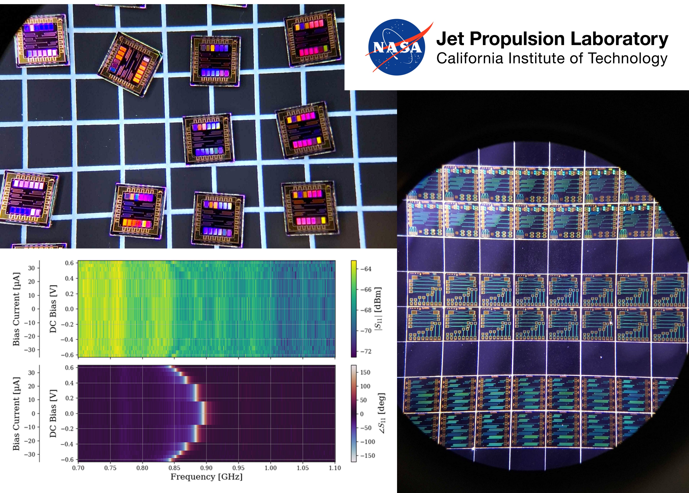

Back to selected projects
NASA - Jet Propulsion Laboratory
Advanced SNSPDs for Basic Science.
This project page is a placeholder and will be expanded with full technical context, scope, and outcomes.

Page update notice
The website needs to be updated for this project. A complete case-study version of this page will be published soon.